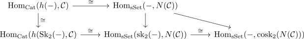

nerve of a category as 2-coskeletal
Proposition
Let $\mathcal{C}$ be a category, then the nerve $N(\mathcal{C})$ is a 2 coskeletal, i.e. the unit
\begin{align*}
\mathcal{C} \rightarrow \mathrm{cosk}_2(\mathcal{C})
\end{align*}
is an isomorphism
Proof
using and the nerve homotopy cat adjunction as well as the skeleton coskeleton adjunction in sSet we get a diagram

where the left horizontal morphism is an isomorphism by isomorphism on 2 skeleton and isomorphism on homotopy category and the other isomorphism are given by the adjunction
hence by class of isomorphisms satisfy two out of three we conclude that
\begin{align*}
\mathrm{Hom}_{\mathrm{sSet}}(-, N(\mathcal{C})) \cong \mathrm{Hom}_{\mathrm{sSet}}(-, \mathrm{cosk}_2(N(\mathcal{C})))
\end{align*}
are naturally isomorphic
and by contravariant weak yoneda that
\begin{align*}
N(\mathcal{C}) \cong \mathrm{cosk}_2(N(\mathcal{C}))
\end{align*}